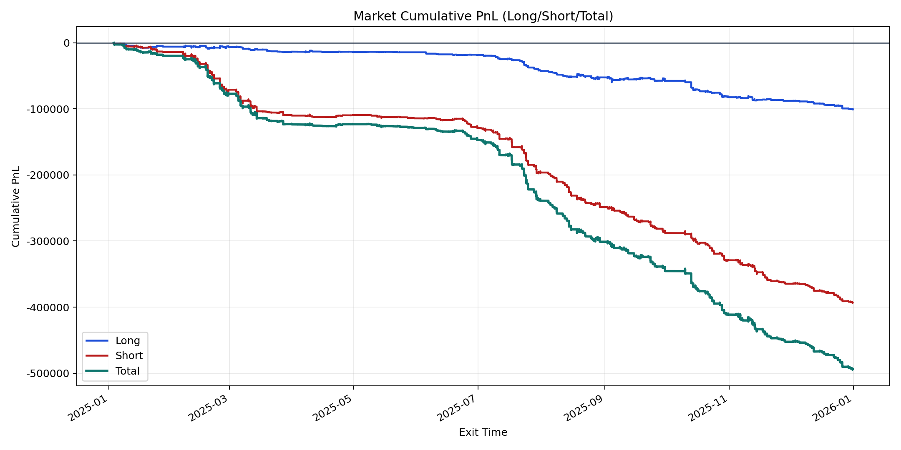
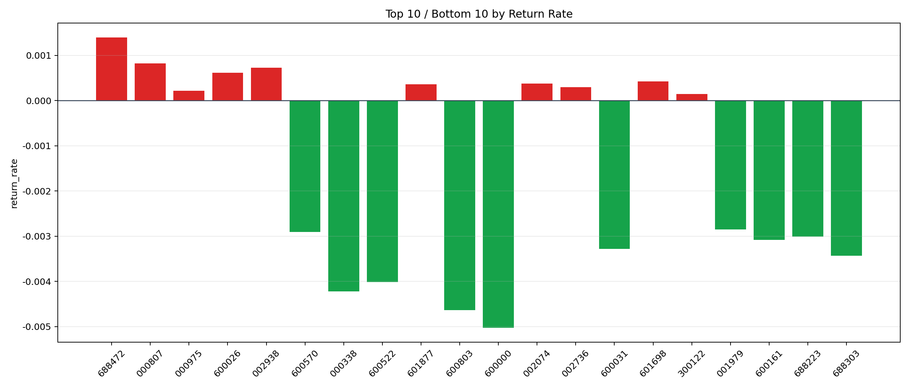

| repo_root | /home/haoranyou/data/output/dynamic_AUM_TAKER_index300 |
|---|---|
| period_months | 12 |
| period_label | 2025-01-03_to_2025-12-31 |
| start_time | 2025-01-03 09:48:37 |
| end_time | 2025-12-31 14:45:29 |
| n_trades | 26315 |
| n_symbols | 99 |
| total_pnl | -493973.9597500024 |
| long_total_pnl | -100702.09554999709 |
| short_total_pnl | -393271.86420000537 |
| total_entry_notional | 469664447.0 |
| long_entry_notional | 137853580.0 |
| short_entry_notional | 331810867.0 |
| total_return_rate | -0.0010517593207347935 |
| long_return_rate | -0.0007305004015854872 |
| short_return_rate | -0.0011852290063785204 |
| top_symbols_by_return | ["688472", "000807", "002938", "600026", "601698", "002074", "601877", "002736", "000975", "300122"] |
| bottom_symbols_by_return | ["600000", "600803", "000338", "600522", "688303", "600031", "600161", "688223", "600570", "001979"] |

